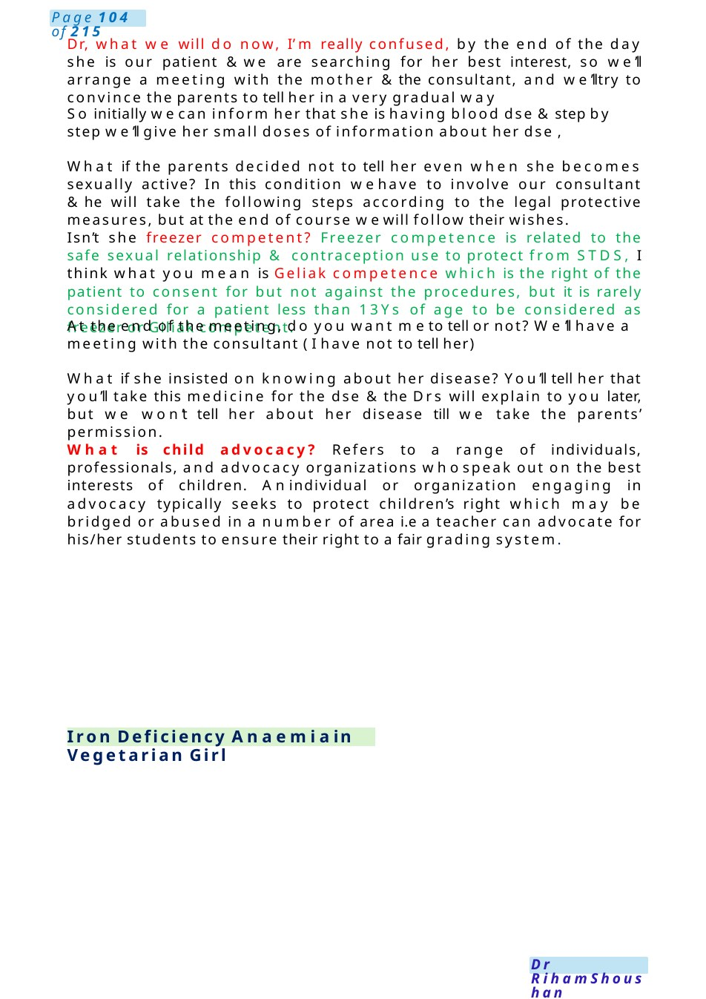
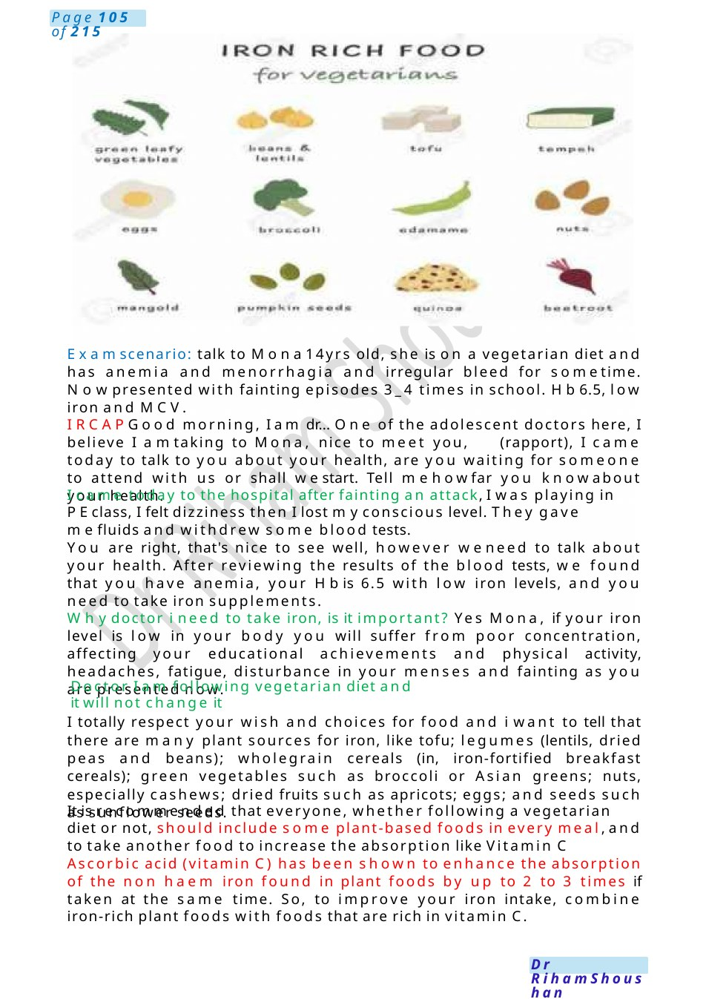
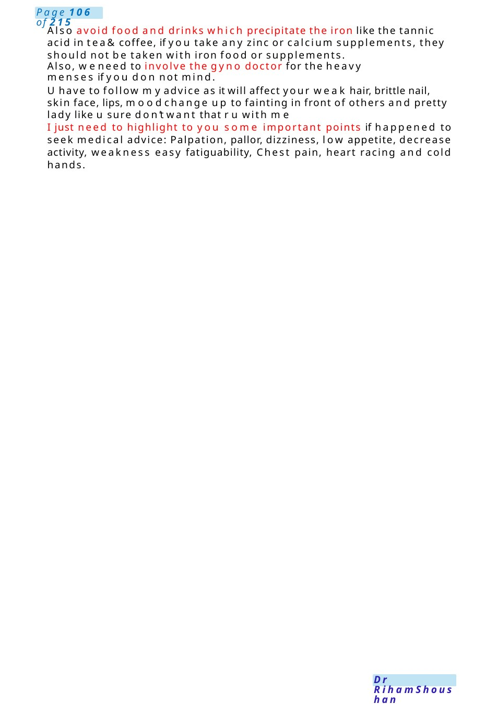

Iron Deficiency Anaemia in Vegetarian Girl
Dr, what we will do now, I’m really confused, by the end of the day she is our patient &we are searching for her best interest, so we’ll arrange a meeting with the mother &the consultant, and we’lltry to convince the parents to tell her in a very gradual way So initially wecan inform her that she is having blood dse &step by step we’ll give her small doses of information about her dse ,
Scenario Summary
Dr, what we will do now, I’m really confused, by the end of the day she is our patient &we are searching for her best interest, so we’ll arrange a meeting with the mother &the consultant, and we’lltry to convince the parents to tell her in a very gradual way So initially wecan inform her that she is having blood dse &step by step we’ll give her small doses of information about her dse ,
Full Original Scenario

Iron Deficiency Anaemiain Vegetarian Girl
Dr, what we will do now, I’m really confused, by the end of the day she is our patient &we are searching for her best interest, so we’ll arrange a meeting with the mother &the consultant, and we’lltry to convince the parents to tell her in a very gradual way
So initially wecan inform her that she is having blood dse &step by step we’ll give her small doses of information about her dse ,
What if the parents decided not to tell her even when she becomes sexually active? In this condition wehave to involve our consultant &he will take the following steps according to the legal protective measures, but at the end of course wewill follow their wishes.
Isn’t she freezer competent? Freezer competence is related to the safe sexual relationship & contraception use to protect from STDS, I think what you mean is Geliak competence which is the right of the patient to consent for but not against the procedures, but it is rarely considered for a patient less than 13Ys of age to be considered as freezer or Giliak competent.
At the end of the meeting, do you want meto tell or not? We’ll have a meeting with the consultant ( I have not to tell her)
What if she insisted on knowing about her disease? You’ll tell her that you’ll take this medicine for the dse &the Drs will explain to you later, but we won’t tell her about her disease till we take the parents’ permission.
What is child advocacy? Refers to a range of individuals, professionals, and advocacy organizations whospeak out on the best interests of children. Anindividual or organization engaging in advocacy typically seeks to protect children’s right which may be bridged or abused in a number of area i.e a teacher can advocate for his/her students to ensure their right to a fair grading system.

Examscenario: talk to Mona14yrs old, she is on a vegetarian diet and has anemia and menorrhagia and irregular bleed for sometime. Nowpresented with fainting episodes 3_4 times in school. Hb6.5, low iron and MCV.
IRCAPGood morning, I am dr... One of the adolescent doctors here, I believe I amtaking to Mona, nice to meet you, (rapport), I came today to talk to you about your health, are you waiting for someone to attend with us or shall westart. Tell mehowfar you knowabout your health.
I came today to the hospital after fainting an attack, I was playing in PEclass, I felt dizziness then I lost myconscious level. They gave mefluids and withdrew some blood tests.
You are right, that's nice to see well, however weneed to talk about your health. After reviewing the results of the blood tests, we found that you have anemia, your Hbis 6.5 with low iron levels, and you need to take iron supplements.
Whydoctor i need to take iron, is it important? Yes Mona, if your iron level is low in your body you will suffer from poor concentration, affecting your educational achievements and physical activity, headaches, fatigue, disturbance in your menses and fainting as you are presented now.
Doctor I am following vegetarian diet and it will not change it
I totally respect your wish and choices for food and i want to tell that there are many plant sources for iron, like tofu; legumes (lentils, dried peas and beans); wholegrain cereals (in, iron-fortified breakfast cereals); green vegetables such as broccoli or Asian greens; nuts, especially cashews; dried fruits such as apricots; eggs; and seeds such as sunflower seeds.
It is recommended that everyone, whether following a vegetarian diet or not, should include some plant-based foods in every meal, and to take another food to increase the absorption like Vitamin C
Ascorbic acid (vitamin C) has been shown to enhance the absorption of the non haem iron found in plant foods by up to 2 to 3 times if taken at the same time. So, to improve your iron intake, combine iron-rich plant foods with foods that are rich in vitamin C.

Also avoid food and drinks which precipitate the iron like the tannic acid in tea& coffee, if you take any zinc or calcium supplements, they should not be taken with iron food or supplements.
Also, weneed to involve the gyno doctor for the heavy menses if you do not mind.
Uhave to follow myadvice as it will affect your weak hair, brittle nail, skin face, lips, moodchange up to fainting in front of others and pretty lady like u sure don’t want that r u with me
I just need to highlight to you some important points if happened to seek medical advice: Palpation, pallor, dizziness, low appetite, decrease activity, weakness easy fatiguability, Chest pain, heart racing and cold hands.

Colleague Drinking Alcohol
MRCPCHCommunication Scenario Speaking to a Colleague Suspected of Drinking Alcohol at Work
Scenario Background: You are the pediatric registrar on duty. Anurse and another colleague approached you because they noticed that Dr. Adamsmells strongly of alcohol during his shift. They tried speaking to him, but he became defensive and refused to discuss it. They are concerned about patient safety and asked you, as a senior colleague, to talk to him privately.
Yourtask is to:
- Speak to Dr. Adamprofessionally and supportively.
- Address patient safety concerns.
- Explore whether he is fit to continue working.
- Encourage him to accept help and follow hospital policy.
Hello Adam, do you have a few minutes to talk privately?
Thank you. I wanted to discuss something sensitive with you. Some members of staff are worried because they noticed a smell of alcohol on your breath today. I also noticed it myself, and I felt it was important to speak with you directly.”
Acknowledge Difficulty / Maintain Non-Judgmental Tone
I appreciate this may feel uncomfortable or upsetting to hear, and myintention is not to accuse or embarrass you. Mymain concern is your wellbeing and, most importantly, patient safety.”
Explore the Situation
Can you help meunderstand what’s been happening today?”